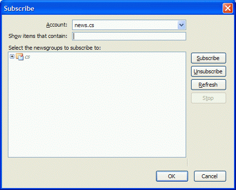

All announcements for this course are done on the EECS 325 Newsgroup. With a decent newsreader program, of which there are many, posting and reading messages is orders of magnitude easier than using the discussion forums provided by learning management systems like Blackboard and WebCT.
Note: You must be on the Northwestern network to read CS 325 news. If you're off-campus, use VPN to connect to Northwestern first.
To read the CS 325 newsgroup, you need to:
cs.news account in your newsreader,
to read newsgroups on the
CS news server.news:cs.325 URL's start your newsreader.The reason newsgroups work better than Blackboard discussion forums is that newsreaders are programs optimized for reading news, not clunky web pages. There's a zillion newsreaders, including many free ones. I use Thunderbird myself, but Outlook Express also works fine, as does Mozilla and Netscape 7, etc., etc.
You can find a list of newsreaders (for Windows but many work on Linux as well) at http://www.newsreaders.com/win/clients.html .
Once you have a newsreader, you need to tell it where to go to get the news. You can read news from many different servers. There's a wealth of information on Usenet which has thousands of newsgroups, read and posted to by people around the world. Unfortunately, Northwestern no longer provides a server with the Usenet groups, but you can see what's there using Google Groups. If you'd like to join in, get a free account at news.individual.net.
For this class, you need tell your newsreader how to find and connect to the CS news server.
When you click the option for adding an account, your newsreader will ask you for information about the news server and you. Here's what you need to tell it:
news.cs.northwestern.edu119 -- this is the usual defaultcs.news.
mail.cs.northwestern.edu, if you use that, or
the Northwestern mail server you use, e.g., casbah.it.northwestern.edu.
In addition, if you can find the option, be sure to turn off
using HTML in your messages. In Thunderbird, when you create the account,
this is checkbox under Composition and Addressing.
Usually, when you first create or open the CS 325 account, your newsreader will check the server to see what newsgroups are there. It will then ask you something like "Do you want to review new newsgroups?" Say "yes."
Newsgroups are organized into groups and subgroups, so the reader will usually display something like a directory tree. For example, in Thunderbird, I see this:
This says that there's one main group called cs. To see
the subgroups, I click the plus sign (+) and see this:
Now I just click on cs.325 and click Subscribe
and OK. My newsreader will now download any messages I haven't seen
for easy reading and responding.
This step is optional but it makes it easy to click on the
links in web pages that have the URL news:cs.325
and go directly to your newsreader. For this to work, your browser has to
know what your newsreader is. This is usually most easily done
in your newsreader. Look for an option to make the newsreader the
default for reading news. In Thunderbird,
you'll find this checkbox in the dialog box that appears
when you select Tools | Options.
Comments?  Send me email.
Send me email.